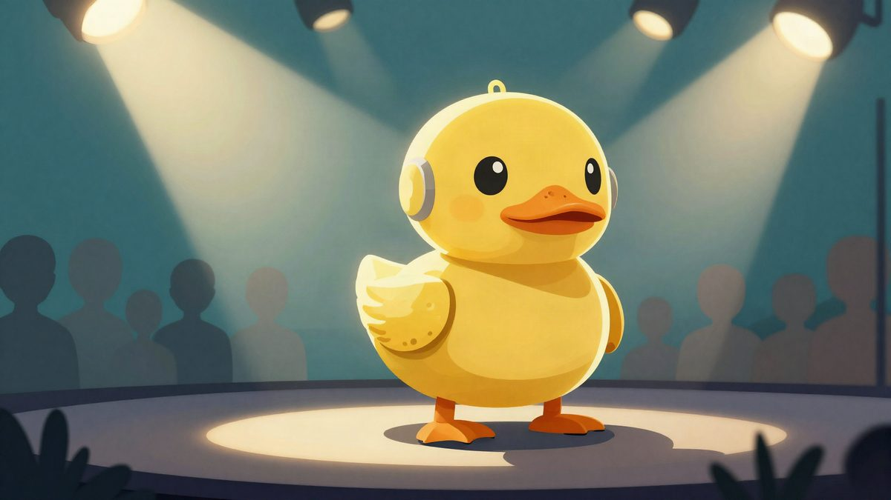

Microduck je prikupio 20.000 prednarudžbi nakon Nvidijine demonstracije u Berlinu

Nakon demonstracije u Berlinu, interes za malog robotskog patka naglo je porastao i prednarudžbe su premašile 20.000 komada, prema TechCrunchu. Microduck je visok 25 cm, težak 800 g i košta 399 dolara, a isporuka je najavljena prije Božića.
Jensen Huang, šef Nvidije, na sceni je demonstrirao mali robotski patak Microduck, a interes je nakon toga naglo porastao. Prema TechCrunchu, prednarudžbe su premašile 20.000 komada nakon njegovog nastupa na Nvidijinom GTC događaju u Berlinu.
Na snimci se vidi kako se Microduck gega na malim nogama, sjeda i reagira na Huangove glasovne naredbe. Robot je pokazao i jednostavne pokrete poput prevrtanja prema naprijed. Izdavao je i zvukove nalik elektronici, što je dodatno privuklo pažnju publike i internetskih korisnika.
Microduck je predstavljen krajem kolovoza. Visok je 25 cm, težak 800 g i ima 15 motora. Ugrađeni su i kamera, mali dubinski senzor te dva IMU senzora. Cijena je 399 dolara.
Pollen Robotics, francuska robotska tvrtka koja je razvila Microduck, kaže da je riječ o open-source robotu. Tvrtka navodi da je robotovo učenje temeljeno na Nvidijinoj tehnologiji: prvo trenira u virtualnoj simulaciji za osnovne pokrete poput hodanja, sjedenja i ustajanja, a zatim se ti modeli prenose na fizički robot.
Polen Robotics također tvrdi da korisnici mogu sami učiti robota novim pokretima i podijeliti ih s drugima. To bi moglo pomoći da se oko modela stvori zajednica korisnika i razvojnih entuzijasta.
Unatoč tome, robot nije besprijekoran. Reuters navodi da su se na Huangovu naredbu da „odrijeme” tri robota odmah srušila, dok je četvrtom trebala dodatna naredba. Na kraju prezentacije jedan se robot okrenuo u pogrešnom smjeru, pa mu je Huang rekao da se fokusira.
Prema dostupnim informacijama, isporuka je planirana prije Božića, pa Microduck može postati jedan od istaknutijih sezonskih robot-proizvoda ove godine.
Izvor: ETNews (전자신문)